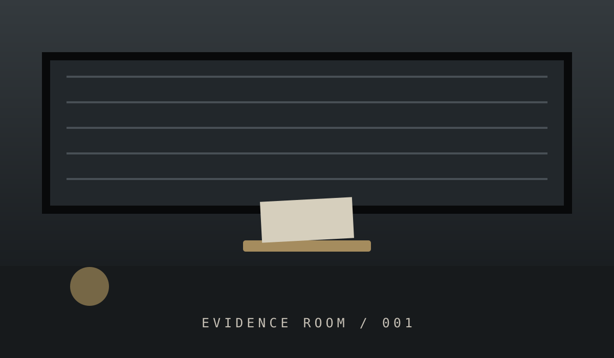
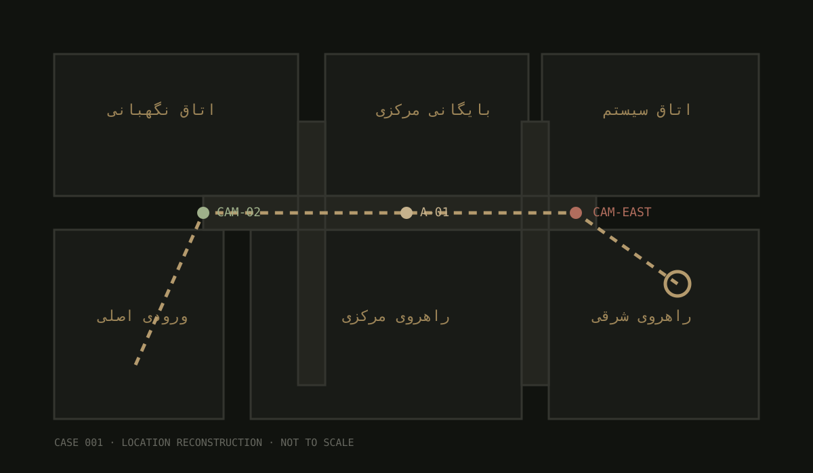

CASE 001 / ORIGINAL FILE یادداشت بازپرس سامان نادری، ۳۴ ساله، مسئول شیفت شب بایگانی مرکزی بود. ساعت ۲۳:۰۹ آخرین ورود معتبر او ثبت شد. یازده دقیقه بعد، دوربین راهروی شرقی برای ۷۱ ثانیه از کار افتاد.
وقتی نگهبان به اتاق رسید، در قفل نبود؛ چراغ روشن بود؛ میز مرتب بود؛ اما سامان آنجا نبود.
«اگر چیزی را پیدا نمیکنید، اول ببینید چه کسی میخواسته آن را پیدا نکنید.» بازپرس پرونده · ن.ر. SUBJECT / LAST KNOWN PHOTO سامان نادری · آخرین تصویر ثبتشده SCENE PHOTO 
سرنخهای مهم 23:17 دوربین شرقی کلید یدکی پیام حذفشده دسترسی شبکه ردپای دیجیتال
▶ دوربینها بازسازی ۳ زاویه ⌖ نقشه محل مسیرها و نقاط کلیدی ⌘ شواهد دیجیتال لاگ، فایل و متادیتا ⊙ آزمایشگاه بررسی مدارک فیزیکی
DOCUMENT 02
گزارش اصلی حادثه ORIGINAL / 02-A INCIDENT REPORT · VERIFIED COPY در ساعت ۲۳:۱۷ سیستم هشدار ساختمان به مدت ۴۳ ثانیه فعال شد. هیچ ورود اجباری ثبت نشده است.
دوربین شرقی از ۲۳:۱۶:۵۱ تا ۲۳:۱۸:۰۲ تصویر قابل استفادهای نداشت. لاگ سیستم میگوید فرمان قطع از شبکه داخلی صادر شده است.
روی میز، برگهای با سه کلمه پیدا شد: «شرق / کلید / دیر».
یک کلید یدکی از جعبه نگهبانی کم شده بود و دفتر تحویل آن برای همان شب خالی است.
بخش محرمانه · نام کاربر سیستم [████████]
VERIFIED · CHAIN OF CUSTODY OK
EVIDENCE ROOM
مدارک و تصاویر 14 ITEMS / 4 CATEGORIES A-01 · اتاق بایگانی · 23:44 · ORIGINAL SCENE A-02 · آخرین تصویر ثبتشده B-02 / NOTE یادداشت روی میز شرق
HANDWRITING C-03 / KEY LOG دفتر تحویل کلید 23:02 · کلید یدکی · امضا: —
23:31 · بازگشت · ثبت نشده
PHYSICAL D-04 / SYSTEM لاگ شبکه 23:16:51 CAM-EAST OFFLINEDIGITAL CCTV CONTROL / RECOVERED FOOTAGE
دوربینهای مداربسته 3 CAMERAS · 23:00—23:45
CAM-01 · ARCHIVE 23:09:14 REC ● NO AUDIO ▶ پخش بازسازی آخرین فریم: 23:09:14
سامان وارد بخش بایگانی میشود. تصویر چند ثانیه بعد قطع نمیشود؛ اما سوژه دیگر در فریمهای بعدی دیده نمیشود.

CAM-EAST · CORRIDOR 23:16:51 LOST ● 71 SEC GAP ▶ بازسازی شکاف تصویر 23:16:51 → 23:18:02
مهمترین شکاف پرونده. دوربین دقیقاً در بازهای قطع میشود که کلید و هشدار با هم مرتبط میشوند.
CAM-03 · EXIT 23:41:03 REC ● LOW LIGHT ▶ پخش فریمهای آخر 23:40:48—23:41:20
نگهبان وارد صحنه میشود. ورود یا خروج واضحی از در اصلی در این بازه دیده نمیشود.
برای هر دوربین «پخش بازسازی» را بزن؛ این ویدیوها بازسازی تعاملی شواهد پروندهاند.
SCENE RECONSTRUCTION
نقشه محل حادثه NOT TO SCALE EVENT CORRELATION
خط زمانی بازسازیشده 23:00—23:45 22:51 آخرین ورود سامان به ساختمان
23:02 کلید یدکی از جعبه خارج میشود
23:09 آخرین فریم معتبر از سامان
23:16:51 CAM-EAST از شبکه خارج میشود
23:17:04 هشدار ساختمان فعال میشود
23:17:19 فرمان شبکهای ناشناس ثبت میشود
23:18:02 دوربین شرقی دوباره آنلاین میشود
23:31 بازگشت کلید در دفتر ثبت نشده
23:41 نگهبان وارد اتاق میشود
INTERVIEWS
اظهارات ثبتشده 3 INTERVIEWS نادر کاظمی نگهبان شب · 23:56 میگوید هنگام هشدار در اتاق نگهبانی بوده و درباره کلید یدکی چیزی نمیداند.
دسترسی فیزیکی بالا
لیلا مرادی کارمند بایگانی · 00:18 میگوید ساعت ۲۲:۴۰ ساختمان را ترک کرده و خروجش در دوربین ثبت شده است.
دسترسی فیزیکی متوسط
پیمان فرهمند مسئول سیستم · 00:42 میگوید قطع دوربین میتواند خطای شبکه باشد و هنگام هشدار پنل را دیده است.
دسترسی فنی بسیار بالا
RECOVERED COMMUNICATIONS
پیامهای بازیابیشده 5 RECORDS 22:48 / سامان · همهچیز طبق برنامه است؟
22:49 / مخاطب ناشناس · تقریباً. ساعت را فراموش نکن.
23:04 / سامان · اگر چراغ روشن شد، یعنی هنوز دیر نشده.
23:11 / مخاطب ناشناس · سمت شرق را نگاه نکن.
23:18 / سامان · [پیام حذف شده] · recovery status: PARTIAL
DEVICE: ANDROID RECOVERY: 62% LAST SYNC: 23:18:07
PERSONS OF INTEREST
افراد مرتبط 3 PROFILES نادر کاظمی نگهبان شب دسترسی فیزیکی به ساختمان و جعبه کلیدها.
دسترسی فیزیکی
لیلا مرادی کارمند بایگانی با سامان در همان بخش کار میکرد؛ خروجش پیش از رویداد ثبت شده است.
تناقض کم
پیمان فرهمند مسئول سیستم دسترسی فنی به شبکه و دوربینها؛ میتواند فرمانهای مدیریتی ارسال کند.
دسترسی فنی بالا
DIGITAL FORENSICS
شواهد دیجیتال HASHED / VERIFIED LOG camera-east.log 23:16:51—23:18:02 · 4.8 KB CAM-EAST OFFLINEMSG recovered-msg-03 partial recovery · 62% متن پیام حذفشده کامل نیست. زمان ارسال آن با بازگشت دوربین تقریباً همزمان است.
USB system-admin.session session id · 8F2A-17 یک نشست مدیریتی در شبکه داخلی وجود دارد که باید با اظهارات افراد تطبیق داده شود.
SHA evidence-manifest integrity check · PASS CHAIN-OF-CUSTODY: OKEVIDENCE LAB
آزمایشگاه مدارک 4 TESTS ⌁
اثر انگشت روی کلید نمونه ناقص است؛ برای تطبیق قطعی کافی نیست، اما ارزش بررسی دارد.
STATUS · PARTIAL ✎
دستخط یادداشت فشار نوشتار و فرم حروف با چند نمونه موجود قابل مقایسه است.
STATUS · PENDING ◉
تصویر دوربین سه فریم از قبل و بعد از قطعی دوربین برای افزایش کنتراست علامتگذاری شدهاند.
STATUS · ENHANCED ▣
زنجیره نگهداری زمان ثبت و انتقال مدارک با لاگ بایگانی مطابقت دارد.
STATUS · VERIFIED FINAL THEORY / 001 چه کسی پشت ماجراست؟ پاسخ باید شامل نام فرد و دلیل یا عمل او باشد. عدد بهتنهایی کافی نیست. قبل از ثبت نظریه، دوربین، نقشه، خط زمانی و شواهد دیجیتال را کنار هم بگذار.
ثبت نظریه
CASE ANALYSIS COMPLETE ✓
نظریه با شواهد سازگار است. تحلیل شما با زمانبندی، دسترسیها و مدارک دیجیتال پرونده بیشترین سازگاری را دارد.
بازگشت به بایگانی